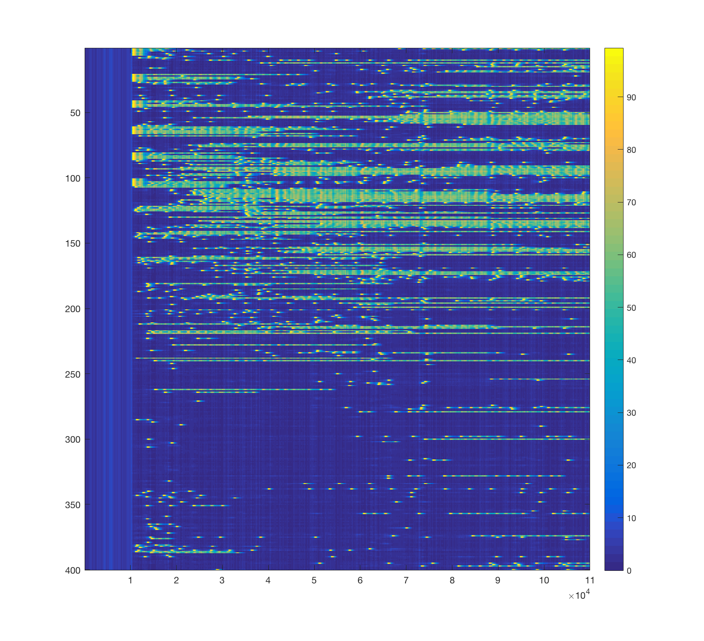
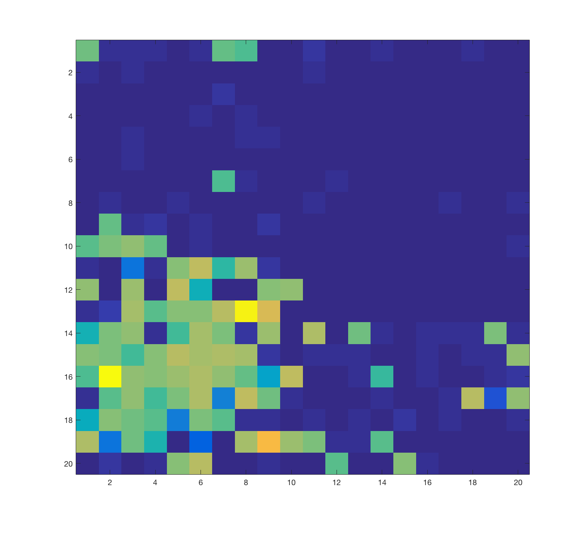
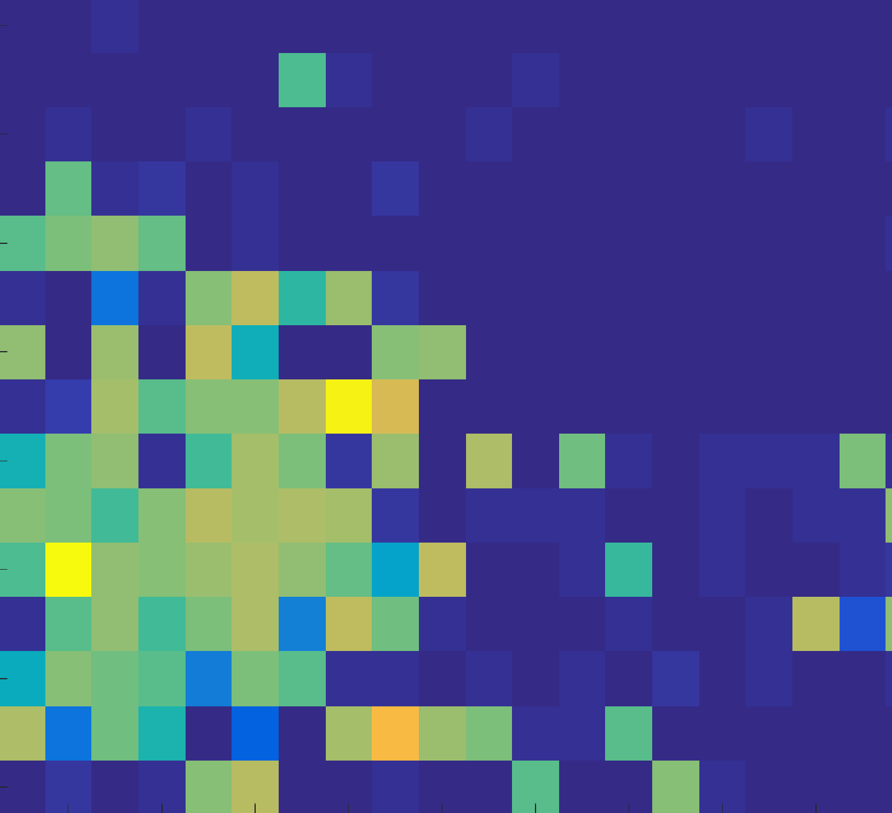

Contents
- Flags
- Randomness
- Parameter Initialization
- Space cells on a lattice of size N1 x N2
- Create Probabilist Description of Connection
- Cell-specific Params
- Stimulation Parameters
- Calculate Connections
- Calculate Input Parameters
- Intitialize Trackers and Set Max Trials
- Trial Simulations
- Per Stimulation
- Step Through Times
- Post-trial plotting
- Correlation Analysis/Figures
- Excitatory Analysis/Figures
% many_tuned_count_mems_50f5.m % Rate-model code for a network with many stable states. % Ryan - notes ... I think this code may clear all; clf; close all;
Flags
figureson = true; % set to 1 to plot a lot more figures
test_on = 0;
weight_normalization = true;
Randomness
2 random streams, with s2 used for cell and network structure while the other, s1, is used for temporal noise
[s1] = RandStream.create('mrg32k3a','NumStreams',1,'seed',sum(100*clock)) [ s2 ] = RandStream.create('mrg32k3a','NumStreams',1,'seed',2) rand(s1,2,2) rand(s2,2,2) rand(2,2)
s1 =
mrg32k3a random stream
Seed: 211199
NormalTransform: Ziggurat
s2 =
mrg32k3a random stream
Seed: 2
NormalTransform: Ziggurat
ans =
0.0114 0.6574
0.5998 0.8723
ans =
0.2644 0.4759
0.9964 0.1286
ans =
0.2709 0.8908
0.4916 0.4828
Parameter Initialization
dt = 0.0002; % Time step (sec) bint = 0.050; % Bin width for averaging and plotting rates nbin = round(bint/dt) % Number of time steps per bin tmax = 22.0; % Maximum time per stimulus (sec) Nsec1= round(0.5*tmax/dt); % Number of time steps in half of tmax multistim = 0; % set to 1 if different stimulus types are varied Nstims = 1; % Default value used for single stimulus type trial_reset = 1; % Set to zero to prevent "counting" across trials dtime = true; % Set to one if stimulus duration varies stimtimevec = [0.5]; % Used if stimulus duration varies Ntimes = length(stimtimevec); % Number of different durations I0 = 2; fracI = 0.1; Icell_Input = 0.1; Iappvec = [ 1 2 ]; % Used if applied input amplitude varies NI = length(Iappvec); % Number of different amplitudes of input Nmax = 4; % Number of stimuli to count up to if ( dtime == 1 ) % If stimulus duration changes Nstims = length(stimtimevec); end if (multistim) % If multiple variations of stimulus tuype Nstims = length(stimtimevec)*length(Iappvec)*(Nmax+1) - 1; end Num_of_trials = 1; % Number of trials per stimulus t = 0:dt:tmax*(Nstims); % Time vector Nt = round(tmax/dt); % Number of time points
nbin = 250
Space cells on a lattice of size N1 x N2
exponential_dist = 0; % flag for exponential dependence of connection prob decay_dist = 0.07; % frac of sites for decay length power_dist = 1.5; Nx = 20; Ny = 20; decay_dist = decay_dist*sqrt(Nx*Nx+Ny*Ny); NE = Nx*Ny; % Number of neurons in code xpos = 1:NE; xpos = floor( (xpos-1)/Nx) +1; ypos = 1:NE; ypos = mod(ypos-1,Nx)+1; [pos1, pos2] = meshgrid(xpos, xpos); Distx = pos1 - pos2; Distx = mod(Distx,Nx); Distx = min(Distx,Nx-Distx); [pos1, pos2] = meshgrid(ypos, ypos); Disty = pos1 - pos2; Disty = mod(Disty,Ny); Disty = min(Disty,Ny-Disty); Dist = sqrt(Distx.*Distx + Disty.*Disty);
Create Probabilist Description of Connection
pmax = 0.5; if ( exponential_dist) pEE = pmax*exp(-Dist/decay_dist); else pEE = pmax./(1+Dist.^power_dist); end pmean = mean(mean(pEE-diag(diag(pEE)))) %pEE = pEEbar*pEE/pmean;
pmean =
0.0331
Cell-specific Params
% CELLS Ncells = NE+1; % INPUT AND OUTPUT PARAMS rmax0E = 100; % Maximum firing rate rmax0I = 200; % Maximum firing rate rmax = [rmax0E*ones(1,Ncells-1) rmax0I]; Ith0 = 18; % Current needed for half-maximal firing IsigmaTh = 0; % Range of thresholds across all cells Iwidth0 = 3; % How far from threshold you need to be for rate to change % CONNECTIONS Wrecurrent = 200; % Strength of connection from one group to itself sigmaWEE = 0; % Level of heterogeneity in connection strength Wasym = 35/(pmean*(Ncells-1)); % Strength of connection from one group to another sigmaWasym = 0; % Heterogeneity in cross-connections WIEval = -320; % Strong cross-inhibition sigmaIE = 0; % Heterogeneity in cross-inhibition WEIval = 320/(Ncells-1); % E to I connection strength % TIME CONSTANTS tausE = 0.025; tausI = 0.005; taus = [tausE*ones(1,Ncells-1) tausI]; % Time constant for synapse taudbar = 0.15; taudvar = 0.0; taud = [taudbar+taudvar*rand(s2,1,Ncells-1) taudbar]; % Time constant for depression taum = 0.010; % Time constant for change in firing rate p0E = 0.3; % Base release probability of vesicles p0I = 0.1; p0 = [p0E*ones(1,Ncells-1) p0I]; sfrac = 1; % Maximum proportion of receptors activated by a vesicle release
Stimulation Parameters
dI = 0.2; stimtime = 0.25; dstimtime = 0.010; Iapp0 = zeros(1,Nstims); if trial_reset && dtime == 0 Iapp0 = dI:dI:dI*Nstims; % Applied current steps else Iapp0 = I0*ones(1,Nstims); end if ( multistim ) Iapp0 = zeros(1,Nstims); for i = 1:NI Iapp0((i-1)*(Ntimes*(Nmax+1))+1:i*Ntimes*(Nmax+1)) = Iappvec(i); end for i = Nmax+1:Nmax+1:Nstims Iapp0(i) = 0; end end trialstimtime = stimtime*ones(1,Nstims); if dtime trialstimtime = stimtimevec; end if multistim for i = 1:NI for j = 1:Ntimes trialstimtime((i-1)*(Ntimes*(Nmax+1))+(j-1)*(Nmax+1)+1: ... (i-1)*(Ntimes*(Nmax+1))+j*(Nmax+1)) = stimtimevec(j) end end end Iappsigmafrac = 1; % IappHetero = 1 + Iappsigmafrac*(rand(s1,1,Ncells)-0.5); % IappHetero = IappHetero.*(rand(s1,1,Ncells) < fracI ); IappHetero = [((xpos<=Nx*sqrt(fracI)).*(ypos<=Ny*sqrt(fracI))), 1]; % IappHetero = [((xpos<=Nx*(1+sqrt(fracI))/2).*(ypos<=Ny*(1+sqrt(fracI))/2)) ... % .*((xpos>Nx*(1-sqrt(fracI))/2).*(ypos>Ny*(1-sqrt(fracI))/2)), 1]; Istart = 2; % Time to start applied current sigma = 0.1; % standard deviation of noise in current Iapp = zeros(length(t),Ncells); % Applied current for each cell at all time points for stim = 1:Nstims Iend = Istart + trialstimtime(stim); % Time to finish appplied current imin = min(round(Istart/dt)+1,length(t)); % Index of time for applied current imax = min(round(Iend/dt)+1,length(t)); % Index of time to end applied current for i = imin:imax Iapp(i+Nt*(stim-1),:) = Iapp0(stim)*IappHetero; end end Iapp(:,Ncells) = Icell_Input*Iapp(:,Ncells);
Calculate Connections
WEE = Wasym + sigmaWasym*(rand(s2,NE,NE)-0.5); % W is the weight matrix: strength of connections WEE = (rand(s2,NE,NE) < pEE ).* WEE; for cell1 = 1:NE WEE(cell1,cell1) = Wrecurrent + sigmaWEE*(rand(s2,1)-0.5); % This is the strength of self-connections and replaces the other value end if ( weight_normalization ) WEE_mean = mean(mean(WEE)); for cell1 = 1:NE WEE(:,cell1) = WEE(:,cell1)*WEE_mean/mean(WEE(:,cell1)); end end WEI = WEIval*ones(NE,1); % Connection strength to I-cell from other cells WIE = WIEval + sigmaIE*(rand(s2,1,NE)-0.5); WII = 0.0; % I-to-I strength W = [ WEE WEI; WIE WII];
Calculate Input Parameters
Ith = Ith0*ones(1,Ncells) + IsigmaTh*(rand(s2,1,Ncells)-0.5); Iwidth = Iwidth0*ones(1,Ncells); Ith(Ncells) = 20.0; % Readout cell has a different threshold Iwidth(Ncells) = 5.0; % Readout cell has a different steepness of slope
Intitialize Trackers and Set Max Trials
meanrate = zeros(length(t),Ncells); % Mean time-dependence averaged across trials stdrate = zeros(length(t),Ncells); % Std of time-dependence across trials mresponse1 = zeros(Nstims,Ncells,Num_of_trials); % Response after time-averaging to each stimulus meanresponse1 = zeros(Nstims,Ncells); % Mean response after averaging across trials sdresponse1 = zeros(Nstims,Ncells); % Std of responses after averaging across trials if ( test_on) max_trials = 2*Num_of_trials; else max_trials = Num_of_trials; end
Trial Simulations
for trial = 1:max_trials
trial
r = zeros(length(t),Ncells); % Firing rate for each cell at all time points
D = zeros(length(t),Ncells); % Depression variable for each cell at all time points
S = zeros(length(t),Ncells); % Synaptic gating variable for each cell at all time points
trial =
1
Per Stimulation
for stim = 1:Nstims
if ( trial_reset || stim == 0 ) || ( multistim && mod(stim,Nmax+1)==0 ) r(1+Nt*(stim-1),:) = 0.0; % Initializing if resetting to different stimuli D(1+Nt*(stim-1),:) = 1.0; S(1+Nt*(stim-1),:) = 0.0; else r(1+Nt*(stim-1),:) = r(Nt*(stim),:) ; % Do not initialize if continuing to count stimuli D(1+Nt*(stim-1),:) = D(Nt*(stim),:); S(1+Nt*(stim-1),:) = S(Nt*(stim),:); end
Step Through Times
for i = 2+Nt*(stim-1):Nt*(stim) % Now integrate through time I = S(i-1,:)*W+Iapp(i,:) ... % I depends on feedback (W*S) and applied current + sigma*randn(s1,1)/sqrt(dt); % and additional noise % S(:,i-1) is the vector of synaptic gating % from the previous time step for all cells % This gets multiplied by the weight matrix % to give total feedback current. rinf = rmax./(1.+exp(-(I-Ith)./Iwidth)); % Firing rate curve gives the steady state r r(i,:) = rinf + (r(i-1,:)-rinf)*exp(-dt/taum); % Update r from the previous timestep Dinf = 1./(1.+p0.*r(i-1,:).*taud); % Steady state value of D for Poisson spiking D(i,:) = Dinf + ( D(i-1,:)-Dinf).*exp(-dt*(p0.*r(i-1,:)+1./taud)); % Update with adjusted time constant Sinf = sfrac*p0.*r(i,:).*D(i,:).*taus./(1.0+sfrac*p0.*r(i,:).*D(i,:).*taus); % Steady state value of % synaptic gating vatiable assuming vesicle % release at a rate p0*r*D S(i,:) = Sinf + ( S(i-1,:)-Sinf).*exp(-dt*(sfrac*p0.*r(i,:).*D(i,:)+1./taus)); % update S with adjusted tau end % continue to next time step if (multistim == 0 && stim > 0 ) || mod(stim,Nmax+1) > 0 % First half of trials obtain mean network responses to % stimuli, used later for confusibility matrix if ( trial <= Num_of_trials ) meanresponse1(stim,:) = meanresponse1(stim,:) + mean(r(i-Nsec1:i,:)); sdresponse1(stim,:) = sdresponse1(stim,:) + mean(r(i-Nsec1:i,:)).*mean(r(i-Nsec1:i,:)); else % Second half of trials used as test responses mresponse1(stim,:,trial-Num_of_trials) = mean(r(i-Nsec1:i,:)); end end
end
Post-trial plotting
if figureson figure(1) imagesc(r(:,1:end-1)') colorbar drawnow end meanrate = meanrate + r; stdrate = stdrate + r.*r;
end
Correlation Analysis/Figures
% The following are all analyses of correlations between reponses to the % different stimuli and of the distinguishability of different stimuli % meanresponse1 = meanresponse1/Num_of_trials; % sdresponse1 = sqrt(sdresponse1/Num_of_trials-meanresponse1.*meanresponse1); % % shiftmresponse1 = meanresponse1 - ones(Nstims,1)*mean(meanresponse1) % figure(1) % imagesc(meanresponse1') % % [scorrr1r1, spvalr1r1] = corr(shiftmresponse1',shiftmresponse1') % [corrr1r1, pvalr1r1] = corr(meanresponse1',meanresponse1') % % figure(2) % subplot(1,2,1) % imagesc(scorrr1r1) % subplot(1,2,2) % imagesc(corrr1r1) % % bintvec = 0:bint:tmax*(Nstims+1)-bint; % binmeanrate = zeros(length(bintvec),Ncells); % binstdrate = zeros(length(bintvec),Ncells); % % for i = 1:length(bintvec) % binmeanrate(i,:) = mean(meanrate((i-1)*nbin+1:i*nbin,:)); % binstdrate(i,:) = mean(stdrate((i-1)*nbin+1:i*nbin,:)); % end % % % binmeanrate = binmeanrate/Num_of_trials; % binstdrate = binstdrate/Num_of_trials - binmeanrate.*binmeanrate; % % maxcorrs = zeros(Nstims,Num_of_trials); % for i = 1:Num_of_trials % trialcorr = corr(squeeze(mresponse1(:,:,i))',meanresponse1'); % [dummy maxcorrs(:,i)] = max(trialcorr); % end % % confusibility = hist(maxcorrs',[1:Nstims]); % confusibility = confusibility/Num_of_trials; % figure(3) % imagesc(confusibility) %clear r D S I t meanrate stdrate %save many_multi_mems_short3
Excitatory Analysis/Figures
figure() meanr = zeros(Nx,Ny); meanr(:) = mean(r(:,1:NE)); imagesc(meanr) rE = r(:,1:NE)'; r2D = zeros(Nx,Ny,length(t)); r2D(:) = rE(:); for j = 1:1000:length(t)-1 imagesc(squeeze(r2D(:,:,j))) M(ceil(j/1000)) = getframe; end [ h, w, p] = size(M(1).cdata) hf = figure(); set(hf,'Position',[150 150 w h]) axis off movie(hf,M,1,30,[0 0 0 0])
h =
1125
w =
1173
p =
3
Warning: Cannot set Position while WindowStyle is 'docked'
 